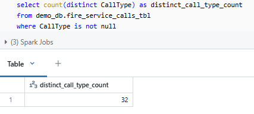
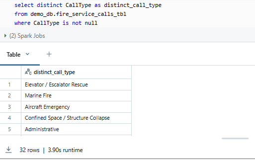
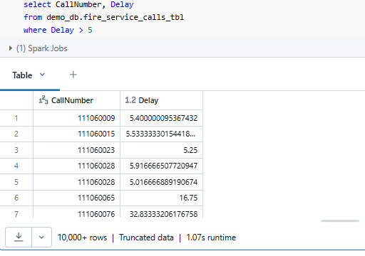
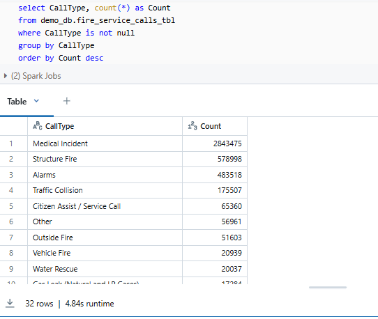
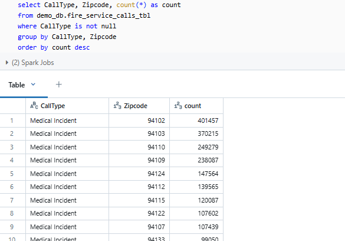
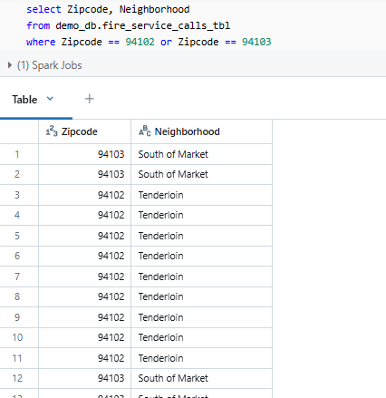
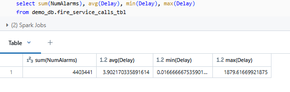
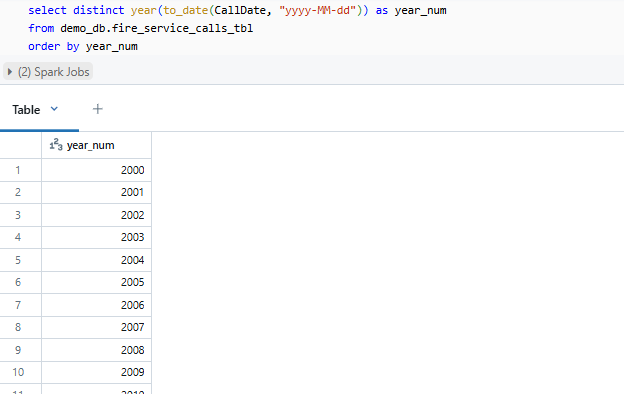
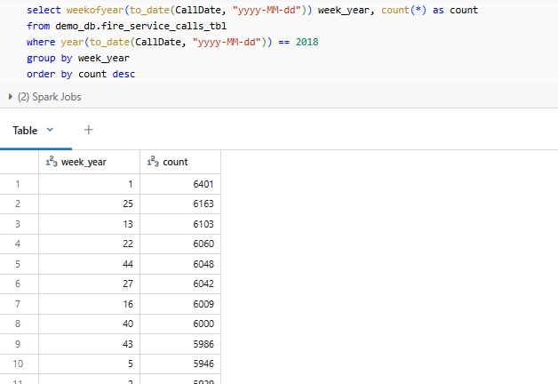
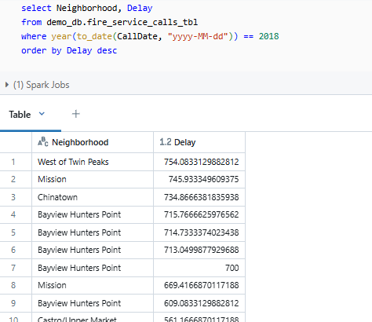

- Understanding Big Data
- Understanding Hadoop
- Spark Advantages over Hadoop
- Introduction to Apache Spark
- Create First Spark Application in Databricks Cloud
- Spark Table Vs Spark DataFrame
- Creating Spark Dataframe
- Creating Spark Tables
- Querying with Spark Table
- Dataframe Transformation & Actions
- Applying Transformations
- Querying Spark DF
We have already created a table in last chapter. Now we are ready to start writing some SQL expressions.
Let's look at our requirements for this lecture:
How many distinct types of calls were made to the fire department?
What are distinct types of calls made to the fire department?
Find out all responses for delayed times greater than 5 mins?
What were the most common call types?
What zip codes accounted for the most common calls?
What San Francisco neighborhoods are in the zip codes 94102 and 94103?
What was the sum of all calls, average, min, and max of the call response times?
How many distinct years of data are in the CSV file?
What week of the year in 2018 had the most fire calls?
What neighborhoods in San Francisco had the worst response time in 2018?
lets have a look again on the table before querying.

How many distinct types of calls were made to the fire department?

What are distinct types of calls made to the fire department?

Find out all responses for delayed times greater than 5 mins?

What were the most common call types?

What zip codes accounted for the most common calls?

What San Francisco neighborhoods are in the zip codes 94102 and 94103?

What was the sum of all calls, average, min, and max of the call response times?

How many distinct years of data are in the CSV file?
Note: CallDate column is a string column

What week of the year in 2018 had the most fire calls?

What neighborhoods in San Francisco had the worst response time in 2018?

Next »